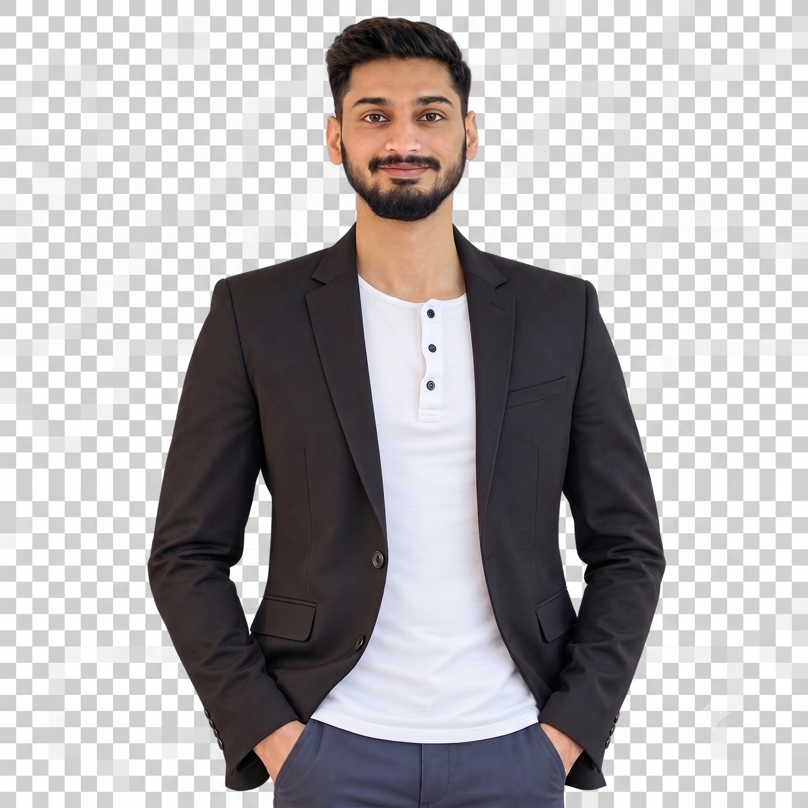

I build and own production Python systems end-to-end — from Django/DRF backends and AWS infrastructure to Blender-based drone automation at BotLab Dynamics, with current work integrating LLM APIs, RAG pipelines, and MCP into existing tooling.
PyQt5 application visualizing real-time satellite time-transfer data for ISRO/IST synchronization.
./view_moreWeb-based educational game built for CSIR-JIGYASA, hosted on a Government of India portal.
./view_moreURSI-RCRS 2022, IIT Indore — "Digital S.I. Traceability of Time through an API."
Measurement & Metrology, and Measurement Uncertainty — NPL UK, 2020.
L S Gupta Memorial Award, NPL India.
Intelligent and Smart Student of the Year, 2012–2013.